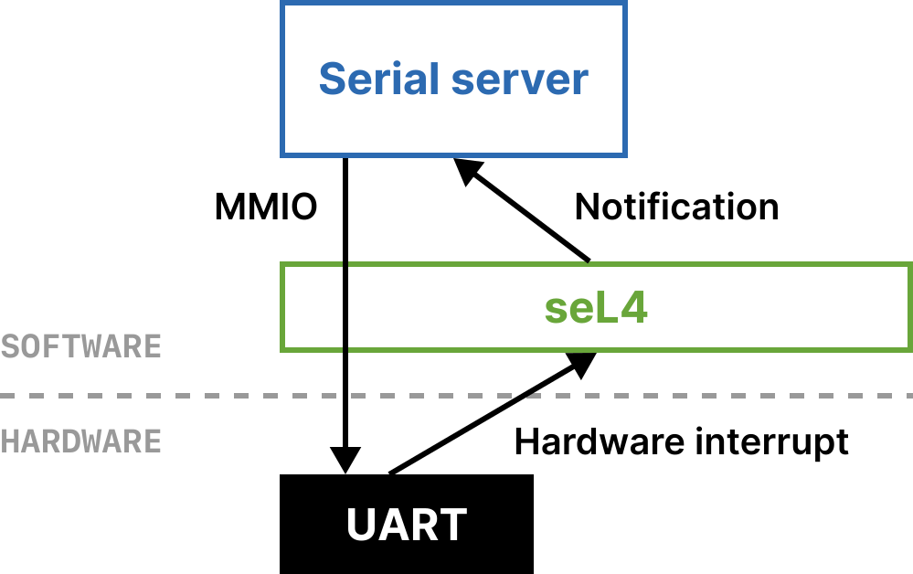
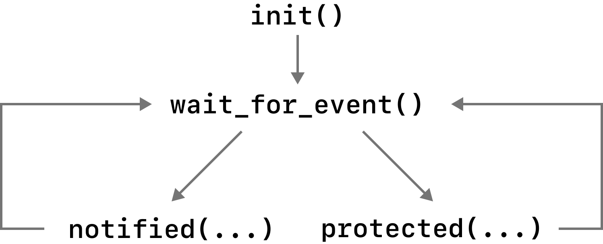

Part 1 - Serial server
Since seL4 is a micro-kernel, a lot of functionality you would typically expect
from a kernel is deliberately not implemented. One example of this is something as simple
as outputting and inputting characters via a terminal. There are no write or read system calls
like on Linux or macOS. While there is a way to output characters to the terminal via seL4,
it is strictly for when debugging/developing.
This means that if we want to build a system like Wordle, which takes user-input and displays the game results via the serial connection, we first need a driver for the serial connection.
In this first part, you will learn all the pieces that go to make a driver on top of seL4. This driver will act as a “server” that clients (in this case the Wordle client) will send data to. The serial server then is the one actually talking to the serial device. The serial device that we will be using is called a Universal Asynchronous Receiver-Transmitter (UART).
Below is a diagram of what we will end up with by the end of this part1:

Creating a serial server
System description example
In Microkit, you describe the architecture of the system you are building in a file we refer to as the “system description”. This file is written in the XML format. Below is an example of a very simple “hello world!” system you could create. It contains a single protection domain that will print out “hello, world!” when it executes. You can see here we define a <protection_domain>, with the program image being some code that we have compiled to hello_world.elf.
<?xml version="1.0" encoding="UTF-8"?>
<system>
<protection_domain name="hello_world">
<program_image path="hello_world.elf" />
</protection_domain>
</system>
Before making our own system description, let’s first understand what a protection domain actually is.
Protection Domains (PDs)
A protection domain is similar to a “process” on typical UNIX systems. However, by default a protection domain cannot do much except execute its code.
A protection domain is an abstraction created by Microkit and is made up of various seL4 primitives. The main ones are:
- A thread-control-block (TCB), because in order to actually have a thread of execution, seL4 needs to create a thread.
- A virtual address-space, known as a VSpace. This is what memory the kernel allows the PD to access. By default all that is in the VSpace is the ELF2 of the PD, so it can execute its own code, and nothing else.
- A capability space, known as a CSpace. Each protection domain has its own CSpace which is a data structure that holds all the capabilities that a PD has access to.
As you can see, there is not lot a PD can actually do by default. And this is intentional. We do not want PDs to be able to access anything unless we explicitly allow it. This is allowed by the capability system, as all resources in seL4 are modelled by capabilities. If a PD does not have the capability to some resource, seL4 does not allow it to use it!
What is a capability? (click to expand)
Whenever you open a file on UNIX-like operating systems, the kernel gives you a file-descriptor. A unique token that is used to refer to that file from now on. Say if you want to read or write or close the file, you have to use the file-descriptor. You can think of capabilities as similar to file-descriptors except that it is for every kind of object in seL4. For example if you wanted a thread to have access to a certain page of memory, it must have the capability to that page. If you want multiple threads to communicate (as we’ll see later), each thread must also have capabilities to the communication objects (such as Endpoints and Notifications in seL4).
Entry points
Although a protection domain is somewhat analogous to a process, it has a considerably different program structure and life-cycle. A process on a typical operating system will have a main function which is invoked by the system when the process is created. When the main function returns the process is destroyed. By comparison a protection domain has three entry points: init, notified and, optionally, protected.
When a Microkit system is booted, all PDs in the system execute the init entry point, and then the Microkit library (libmicrokit) that
each PD is linked with waits for events to come in. This diagram shows the control flow of a PD:

Here is a description of the protection_domain element:
name: a unique name for the protection domain.priority: (optional) the priority of the protection domain (integer 0 to 254), defaults to 0 which is the lowest possible priority. The priority dictates which order PDs will run in. For example if there are two PDs that are both schedulable (i.e. are ready to run) then seL4 will run the higher priority one first.budget: (optional) the PD’s budget in microseconds; defaults to 1,000.period: (optional) the PD’s period in microseconds; must not be smaller than the budget; defaults to the budget.
What are budgets and periods?
While not the focus of this tutorial, budgets and periods allow those making systems on seL4 to specify how long a thread runs for a given amount of time. For example, if there was a thread with 100ms of budget and 300ms of period, that means that the thread is allowed to run for (at most) 100ms every 300ms of CPU time.
If you are interested, there is more information in the seL4 reference manual.
Serial server protection domain
Now that you have some understanding of how protection domains work and are specified, your task is to:
- Edit the system description (
wordle.system) to specify a protection domain for the serial server.- The name of the program image produced by the Makefile is
serial_server.elf. - All values in the XML description are surrounded by quotes, for example,
<protection_domain name="pd" priority="254" />.
- The name of the program image produced by the Makefile is
- Since this PD is a server rather than a client, it should have a higher priority than the client.
Building
If we build part 1 and then look inside the build directory:
# Run these commands inside the "microkit_tutorial" directory
$ cd tutorial
# If you are working on native macOS, `make` may be installed as `gmake` instead.
$ make part1
$ ls build
serial_server.elf serial_server.o loader.img report.txt
We can see that when we run make part1, the file serial_server.c gets compiled into serial_server.elf. That is why the name of the program image in the system description file is serial_server.elf.
After compiling all the code, the microkit tool takes our ELFs and system description file
and produces loader.img, a binary containing everything that we then give to QEMU to load.
The report.txt file contains details about the system that can be useful when debugging, but
for this tutorial, you do not need to look at it.
Running
In order to actually run the system, we will be using the QEMU emulator which allows us to essentially create virtual hardware that we then run seL4 on.
You can emulate the system using the provided Makefile with:
make run
To exit QEMU, press CTRL + a then x.
Explanation of the QEMU command
The full command that is actually being run by make is:
qemu-system-aarch64 -machine virt,virtualization=on \
-cpu cortex-a53 \
-serial mon:stdio \
-device loader,file=build/loader.img,addr=0x70000000,cpu-num=0 \
-m size=1G \
-nographic \
-netdev user,id=mynet0 \
-device virtio-net-device,netdev=mynet0,mac=52:55:00:d1:55:01
For those not overly familiar with QEMU, I will break down the arguments.
-machine virt,virtualization=on -cpu cortex-a53: This just specifies the board we are emulating, in this case we are using QEMU’s AArch64 “virt” board which has no physical counterpart, and we’re specifying to use one ARM Cortex-A53 CPU. Thevirtualization=onis for part 4 of the tutorial, where we run virtual machines on top of seL4.-serial mon:stdio: Send virtual serial output and QEMU’s monitor output ontostdio.-device loader,file=build/loader.img,addr=0x70000000,cpu-num=0: QEMU won’t know how to automatically load this image. Typically with seL4 projects the image is passed via the-kernelflag, however, in this case we have to make the address that the Microkit bootloader is expecting to be loaded at explicit. This is because we are giving QEMU a “raw image”. More information is here.-m size=1G: Have 1G of RAM. This is plenty for this tutorial, but depending on what you’re doing, might need to be increased.-nographic: Disable all graphical output to use QEMU just on the command line.-netdev user,id=mynet0 -device virtio-net-device,netdev=mynet0,mac=52:55:00:d1:55:01: Enables networking for part 4 of the tutorial.
If you’ve done everything correctly, you should see the following output:
MON|ERROR: received message 0x00000006 badge: 0x0000000000000001 tcb cap: 0x8000000000000006
MON|ERROR: faulting PD: serial_server
MON|ERROR: Registers:
MON|ERROR: pc : 0x00000000002000e8
MON|ERROR: spsr : 0x0000000000000040
MON|ERROR: x0 : 0x0000000000000050
MON|ERROR: x1 : 0x0000000000000038
MON|ERROR: x2 : 0x0000000000000000
MON|ERROR: x3 : 0x0000000000000000
MON|ERROR: x4 : 0x0000000000000000
MON|ERROR: x5 : 0x0000000000000000
MON|ERROR: x6 : 0x0000000000000000
MON|ERROR: x7 : 0x0000000000000000
MON|ERROR: VMFault: ip=0x00000000002000e8 fault_addr=0x0000000000000038 fsr=0x0000000092000046 (data fault)
MON|ERROR: ec: 0x00000024 Data Abort from a lower Exception level il: 1 iss: 0x00000046
MON|ERROR: dfsc = translation fault, level 2 (0x00000006) -- write not read
When we start the system we get a bunch of error printing, what has happened?
Remember that by default a protection domain does not have access to any memory other than its own code (as well as any global data and the stack region).
If we look at serial_server.c:
void uart_handle_irq() {
*REG_PTR(uart_base_vaddr, UARTICR) = 0x7f0;
}
void uart_put_str(char *str) {
while (*str) {
uart_put_char(*str);
str++;
}
You will see that it tries to access the UART hardware when it calls uart_init(), which it doesn’t have access to! What happens
is that seL4 gets a “virtual memory fault” and delivers this to something called the monitor which
then prints out the errors you are seeing with MON|ERROR. The monitor acts as the initial task and default fault-handler for Microkit.
So how do we prevent the virtual memory fault from happening? We need to give the serial server access to the UART.
Accessing the UART
Our serial driver will be useless unless it can actually access the UART device registers. We cannot just access the physical address of the UART device since the driver is a user-space program (Protection Domain) and so has its own virtual address space. This means we will need to map in the physical address into our PD’s virtual address space. Microkit provides an abstraction for this, it is called “Memory Regions”.
Memory Regions (MRs)
We can create memory regions at a specific physical address, or somewhere in RAM, that we can then map into the address space of whichever PD we want to have access to it. Here is a full description of the memory_region element which you would use to create a memory region:
name: A unique name for the memory regionsize: Size of the memory region in bytes (must be a multiple of the page size)page_size: (optional) Size of the pages used in the memory region; must be a supported page size if provided. Defaults to the largest page size for the target architecture that the memory region is aligned to.phys_addr: (optional) The physical address for the start of the memory region (must be a multiple of the page size).
In order to access the memory region from a PD, it needs to be mapped using the map element:
mr: Identifies the memory region to map.vaddr: Identifies the virtual address at which to map the memory region to.perms: Identifies the permissions with which to map the memory region with. Can be any combination of r (read), w (write), and x (eXecute).cached: Determines if region is mapped with caching enabled or disabled. Defaults to true.setvar_vaddr: Specifies a symbol in the program image. This symbol will be rewritten with the virtual address of the memory region.
Example
Here is an example of how the system description would look for a driver for a real time clock (RTC) device.
<?xml version="1.0" encoding="UTF-8"?>
<system>
<!-- Define a page sized region for accessing the "real-time clock" -->
<memory_region name="rtc" size="0x1000" phys_addr="0x9010000" />
<protection_domain name="timer_driver">
<program_image path="timer_driver.elf" />
<!--
Map in the "rtc" region that corresponds to the physical address
of the real time clock. The Microkit tool will set the value of
the variable "rtc_base_vaddr" to the virtual address of the mapping
when compiling the final `loader.img` image
-->
<map mr="rtc" vaddr="0x2000000" perms="rw" cached="false"
setvar_vaddr="rtc_base_vaddr" />
</protection_domain>
</system>
Mapping in the UART device
From reading the above example and referring to the description of the map and memory_region elements, you should be able to create the mapping to the UART for the serial server.
Note that:
- With QEMU, we’ll be using a PL011 UART which has a physical address of
0x9000000. - You only need to map in a single 4KiB page.
- Microkit places the code of a PD starting at
0x200000in it’s virtual address space. This means that the address to place the mapping for the UART should be below this, or significantly higher to avoid overlapping (e.g.0x4000000) with the code of the PD. - You can use
setvar_vaddrto initialise a symbol in the code to the specified virtual address. The UART driver provided expects auintptr_t uart_base_vaddrvariable to be set to the virtual address of the UART mapping. - Since we are doing memory mapped I/O, we do not want to enable caching on the mapping.
Your task now is to:
- Map in the UART to the serial server PD with both read and write permissions.
- Run the system and check to see if the
SERIAL SERVER: startingappears.
Interrupt handling
An interrupt request (IRQ) is a signal from a hardware device (e.g. the UART serial device) that tells software that some event has happened. In the case of the UART device, every time we input a character, the device will deliver an interrupt to seL4. In seL4, it decodes the signal and then sends the interrupt as a notification to user-space. In our system we want this interrupt to go to the serial server so that it can handle the interrupt.
In the serial server code (serial_server.c) you will see the notified(microkit_channel ch) entry point. What we want to
happen is that whenever we get an interrupt form the UART the notified entry point is executed. Then we can handle the interrupt and once notified
finishes, the PD will go back to waiting to receive more events (such as more interrupts).
In the Microkit system description, we need to register these interrupts and associate them with a certain PD. This is because like with memory, IRQs are also modelled by capabilities meaning that we need to have the capability to a certain interrupt, before it can be delivered to a PD by seL4.
The irq element is a child element of protection_domain (just like program_image), and has the following attributes:
irq: The interrupt number.id: The channel identifier, an integer from 0 to 623.
The channel identifier is what’s used by a PD to distinguish a particular interrupt from other interrupts or other notification sources.
For example, if you had <irq id="0" irq="20" /> this would mean that whenever we get the interrupt number 20 from the hardware, the
notified(microkit_channel ch) function will be entered, where the value of the ch parameter is 0.
Your task now is to:
- Specify the interrupt for serial input in the system description.
- For the QEMU platform, the IRQ number is 334.
- Inspect the serial server code (
serial_server.c) and complete thenotifiedentry point. When receiving the UART interrupt, do the following:- Get the character that has been inputted via the keyboard with the
int uart_get_char()function. - Print out the character using the
void uart_put_char(int ch)function. - Call the function
void uart_handle_irq()for the driver to handle the IRQ. - Call the libmicrokit function
void microkit_irq_ack(microkit_channel ch), in order to acknowledge the IRQ.- Why do we need to acknowledge the IRQ? What this does is tell seL4 that we have finished handling the IRQ and are ready to receive another one. If we do not acknowledge it, we will never receive another UART IRQ again!
- Get the character that has been inputted via the keyboard with the
Now we can check to see that we are actually receiving interrupts. When you input a character, it should be printing as well. If that is working, you can move on to the next exercise.
-
MMIO stands for “Memory Mapped Input/Output”. It is a way of interacting with certain hardware via memory, in this case the UART device. ↩
-
ELF stands for Executable and Linkable Format, it is just a standard format to compile programs into. ↩
-
You might find this number a bit unexpected, as it is not a power of two. You can find more details in the Microkit manual here. ↩
-
You may be wondering how we know this number. On ARM and RISC-V platforms, there are two main ways to find out the IRQ number for a specific hardware device. One is via official documentation like a ‘Technical Reference Manual’, the other is by inspecting something called the Device Tree Source. This is a file associated with a particular hardware platform, like the QEMU platform or a particular Raspberry Pi model for example. These ‘Device Trees’ contain information such as what the physical address is of a device, and what interrupt number(s) it uses. It should be noted that when registering an IRQ with Microkit/seL4, you must have the CPU observable number, which may not be the same number as the one in the DTS. For example, on ARM peripheral devices (such as UARTs) are offset by 32. In our case, the DTS says the UART devices has an IRQ with number 1, which means that when we want to use it in Microkit/seL4, it becomes 33. ↩